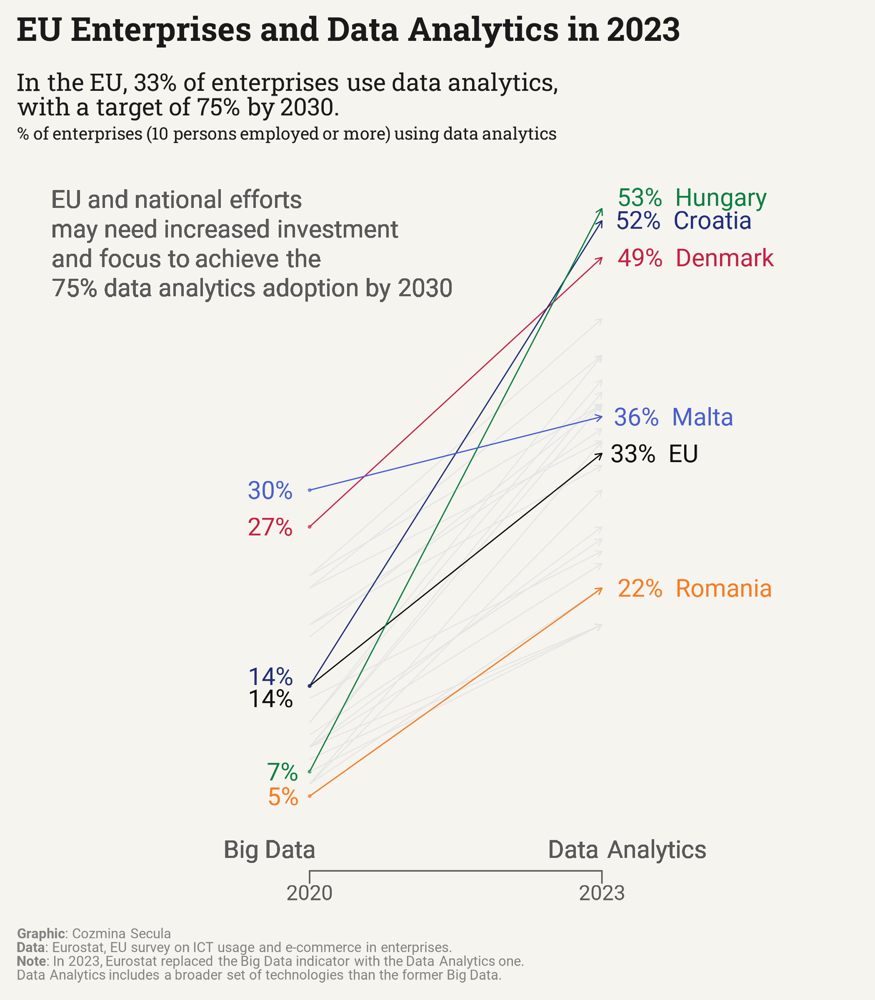

Some time ago, I looked at the components of the EU Digital Intensity Index (DII). One of these components is the Data Analytics Indicator. This week’s data visualization shows the adoption of data analytics by EU enterprises in 2023.
Data analytics refers to the use of technologies, techniques or software tools for analysing data to extract patterns, trends and insights to make conclusions, predictions and better decision-making with the aim of improving performance (e.g., increase production, reduce costs). Data may be extracted from your own enterprise’ data source or from external sources (e.g., suppliers, customers, government) (source Eurostat).
The Data Analytics Indicator was introduced in the DII by the EU in 2023. Previously, the indicator was focused on Big Data.
The Visualization
The visualization is a slope chart (also known as a slope graph). It compares the percentage of businesses in different EU countries that adopted Big Data (2020) and Data Analytics (2023). The chart shows the changes over time for each country, with sloping lines indicating increases or decreases. It is important to note that data analytics includes a broader set of technologies compared to Big Data, so the comparison between 2023 and 2020 is not for the same technologies.
Show the code
# Install and Load packages -----------------------------------------------------------packages<-c("tidyverse", "ggtext", "ggrepel", "lemon", "showtext")installed<-packages%in%rownames(installed.packages())if(any(!installed)){install.packages(packages[!installed])}library(tidyverse)library(ggrepel)library(ggtext)library(lemon)library(showtext)# Load data ---------------------------------------------------------------df<-read.csv("dd_eight_indicators.csv")# Load fonts --------------------------------------------------------------font_add_google("Roboto", "roboto")font_add_google("Roboto Slab", "roboto_slab")showtext_auto()showtext_opts(dpi =300)body_font<-"roboto"title_font<-"roboto_slab"#| Define colors and fonts ----------------------------------------------------------text_col<-"grey10"bg_col<-"#FBFBF9"# Data wrangling ----------------------------------------------------------# Rename columnsdd_data<-df|>mutate(country =as.factor(country.x), bt_tech_indic =as.factor(indicator.x), bt_sme_indic =as.factor(sme_indicator), hc_indiv_indic =as.factor(indicator.y), hc_ict_spec_indic =as.factor(ifelse(!is.na(ict_value), "Employed Ict specialist", NA)), ps_indic =as.factor(variable), bt_tech_value =dtech_value, bt_sme_value =sme_value, hc_indiv_value =value, hc_ict_spec_value =ict_value)|>select(year, geo, country, bt_tech_indic, bt_sme_indic, hc_indiv_indic, hc_ict_spec_indic, ps_indic, bt_tech_value, bt_sme_value, hc_indiv_value, hc_ict_spec_value, ps_value)# Filter data to include only data analytics indicatordd_data_year_da<-dd_data|>filter(bt_tech_indic%in%c("Analyse big data internally from any data source or externally","Data analytics for the enterprise is performed by the enterprise's own employees or by an external provider"))|>mutate(bt_tech_indic =ifelse(bt_tech_indic=="Analyse big data internally from any data source or externally", "Big Data 2020", "Data Analytics 2023"), country =as.character(country), country =ifelse(country=="European Union - 27 countries (from 2020)", "EU", country))|>distinct(year,geo, country, bt_tech_indic, bt_tech_value)# Prepare data for the plotdata_plot<-dd_data_year_da|>pivot_wider(names_from =year, values_from =bt_tech_value)|>pivot_wider(names_from =bt_tech_indic, values_from =c(`2020`, `2023`))|>rename(`2020` =`2020_Big Data 2020` , `2023` =`2023_Data Analytics 2023`)|>mutate(`2020` =round(`2020`, 0), `2023` =round(`2023`, 0))|>select(country, `2020`, `2023`)# Plot --------------------------------------------------------------------subtitle<-paste0("In the EU, 33% of enterprises use data analytics, <br>with a target of 75% by 2030.<br>","<span style='font-size:13px'>% of enterprises (10 persons employed or more) using data analytics</span>")caption<-paste0("**Graphic**: Cozmina Secula<br>**Data**: Eurostat, EU survey on ICT usage and e-commerce in enterprises. <br>**Note**: In 2023, Eurostat replaced the Big Data indicator with the Data Analytics one. <br>Data Analytics includes a broader set of technologies than the former Big Data.")title<-paste0("EU Enterprises and Data Analytics in 2023")callout<-paste0("EU and national efforts <br>may need increased investment <br>and focus to achieve the <br>75% data analytics adoption by 2030")# Define the countries of interesthighlight_countries<-c("Hungary", "Croatia", "Denmark", "Romania", "Malta", "EU")country_color<-c("Hungary"="#0C8040","Croatia"="#1f2e7a","Denmark"="#c91d42","Romania"="#f97a1f","Malta"="#475ed1","EU"="#0d0d0d","Other"="#E5E5E5")# Filter the data oncefiltered_data<-data_plot|>filter(country%in%highlight_countries)# Make the plotp<-ggplot(data_plot)+# Points for all countriesgeom_point(data =filtered_data,aes(x =1, y =`2020`, color =ifelse(country%in%highlight_countries, country, "Other"), alpha =0.3), size =0.4)+# Arrows for all countriesgeom_segment(aes(x =1, y =`2020`, xend =2, yend =`2023`, color =ifelse(country%in%highlight_countries, country, "Other")), arrow =arrow(length =unit(0.15, "cm")), size =0.3)+# Arrows only for specific countriesgeom_segment(data =filtered_data,aes(x =1, y =`2020`, xend =2, yend =`2023`, color =ifelse(country%in%highlight_countries, country, "Other"), group =country), arrow =arrow(length =unit(0.15, "cm")), size =0.3)+# Percentages for 2020geom_text(data =filtered_data,aes(x =1, y =`2020`+ifelse(country=="EU", -1,ifelse(country=="Croatia", 0.8, 0)), label =paste0(`2020`, "%"), color =country, family =body_font), hjust =1.4, size =5)+# Percentages and country names for 2023geom_text(data =filtered_data,aes(x =2, y =`2023`+ifelse(country=="Hungary", 0.95,ifelse(country=="Croatia", 0.05, 0)), label =paste0(`2023`, "% ", country), color =country, family =body_font), hjust =-0.1, size =5)+scale_color_manual(values =country_color)+scale_x_continuous(breaks =c(1, 2), labels =c("2020", "2023"), limits =c(0, 2.5), expand =expansion(mult =c(0, 0.15)))+scale_y_continuous(limits =c(0, 55), breaks =seq(from =5, to =55, by =10), expand =expansion(mult =c(0.02, 0.02)), labels =scales::percent_format(scale =1))+labs( title =title, subtitle =subtitle, caption =caption)+theme_void(base_family =body_font, base_size =10)+theme( legend.position ="none", plot.margin =margin(10, 10, 10, 10), plot.title.position ="plot", plot.caption.position ="plot", plot.title =element_textbox_simple( colour =text_col, hjust =0, halign =0, margin =margin(b =10, t =0), lineheight =1.2, face ="bold", size =rel(1.9), family =title_font), plot.subtitle =element_textbox_simple( colour =text_col, hjust =0, halign =0, margin =margin(b =15, t =5), lineheight =1, size =rel(1.4), family =title_font), plot.caption =element_textbox_simple( colour ="#828282", hjust =0, halign =0, margin =margin(b =0, t =10), lineheight =1, family =body_font), axis.text.x =element_text( family =body_font, colour ="#595959", size =rel(1.2), lineheight =0.4, margin =margin(b =5)), axis.line.x =element_line(linewidth =0.4, color ="#595959"), axis.ticks.x =element_line(linewidth =0.4, color ="#595959"), axis.ticks.length.x =unit(0.25, "cm"))+geom_richtext(aes(x =0.69, y =2, label ="Big Data"), family =body_font, size =5, lineheight =1.2, color ="#595959", hjust =0, vjust =1.03, label.color =NA, fill =NA)+geom_richtext(aes(x =1.8, y =2, label ="Data Analytics"), family =body_font, size =5, lineheight =1.2, color ="#595959", hjust =0, vjust =1.03, label.color =NA, fill =NA)+geom_richtext(aes(x =0.1, y =55, label =callout), family =body_font, size =5, lineheight =1.2, color ="#595959", hjust =0, vjust =1, label.color =NA, fill =NA)+lemon::coord_capped_cart(bottom ="both")ggsave(p, filename ="da_plot.png", width =7, height =8, units ="in", device ="png", dpi =300, bg =bg_col)

Insights
Hungary and Croatia have shown the highest adoption rates in 2023, with Hungary leading at 53% and Croatia close behind at 52%. This indicates that these countries are progressing quickly toward the EU goal.
Romania lags significantly behind, with just 22% adoption in 2023, suggesting it may need additional support or initiatives to catch up.
Malta and the EU average (EU 27) show moderate growth, with Malta rising from 30% to 36% and the EU average reaching 33%. This suggests steady progress but still falls short of the EU’s long-term target.
Tools
This visualization was made using R and the packages:
tidyverse1– a collection of R packages designed for data manipulation, analysis, and visualization, with an emphasis on readability and consistency.
ggrepel2 – for adding labels to ggplot visualizations, helping prevent label overlap and improving label placement.
ggtext3– for enhanced text formatting in ggplot, allowing for rich text and HTML-like styling within plot annotations.
lemon4– for extending ggplot’s functionality, providing better axis scaling, easier faceting, and additional layout options.
showtext5 – for adding and managing custom fonts in R visualizations, allowing the use of system or web fonts with ggplot.
Footnotes
Wickham H, Averick M, Bryan J, Chang W, McGowan LD, François R, Grolemund G, Hayes A, Henry L, Hester J, Kuhn M, Pedersen TL, Miller E, Bache SM, Müller K, Ooms J, Robinson D, Seidel DP, Spinu V, Takahashi K, Vaughan D, Wilke C, Woo K, Yutani H (2019). “Welcome to the tidyverse.” Journal of Open Source Software, 4(43), 1686. doi:10.21105/joss.01686 https://doi.org/10.21105/joss.01686.↩︎
---title: "DataViz 2024-09-26"description: "Eu Enterprises and Data Analytics in 2023"author: "Cozmina Secula"date: "2024-09-26"image: da_plot.pngcode-link: truecode-tools: truecode-fold: truecode-summary: "Show the code"title-block-banner: true---<br>## *Eu Enterprises and Data Analytics in 2023*Some time ago, I looked at the components of the **EU Digital Intensity Index (DII)**. One of these components is the **Data Analytics Indicator**. This week’s data visualization shows the adoption of data analytics by EU enterprises in 2023.\> Data analytics refers to the use of technologies, techniques or software tools for analysing data to extract patterns, trends and insights to make conclusions, predictions and better decision-making with the aim of improving performance (e.g., increase production, reduce costs). Data may be extracted from your own enterprise’ data source or from external sources (e.g., suppliers, customers, government) (source Eurostat).The **Data Analytics Indicator** was introduced in the **DII** by the EU in 2023. Previously, the indicator was focused on **Big Data**.## The VisualizationThe visualization is a **slope chart** (also known as a **slope graph**). It compares the percentage of businesses in different EU countries that adopted **Big Data** (2020) and **Data Analytics** (2023). The chart shows the changes over time for each country, with sloping lines indicating increases or decreases. It is important to note that **data analytics** includes a broader set of technologies compared to **Big Data**, so the comparison between 2023 and 2020 is not for the same technologies.```{r}#| label: DataViz#| warning: false#| message: false# Install and Load packages -----------------------------------------------------------packages <-c("tidyverse", "ggtext", "ggrepel", "lemon", "showtext")installed <- packages %in%rownames(installed.packages())if (any(!installed)) {install.packages(packages[!installed])}library(tidyverse)library(ggrepel)library(ggtext)library(lemon)library(showtext)# Load data ---------------------------------------------------------------df <-read.csv("dd_eight_indicators.csv")# Load fonts --------------------------------------------------------------font_add_google("Roboto", "roboto")font_add_google("Roboto Slab", "roboto_slab")showtext_auto()showtext_opts(dpi =300)body_font <-"roboto"title_font <-"roboto_slab"#| Define colors and fonts ----------------------------------------------------------text_col <-"grey10"bg_col <-"#FBFBF9"# Data wrangling ----------------------------------------------------------# Rename columnsdd_data <- df |>mutate(country =as.factor(country.x),bt_tech_indic =as.factor(indicator.x),bt_sme_indic =as.factor(sme_indicator),hc_indiv_indic =as.factor(indicator.y),hc_ict_spec_indic =as.factor(ifelse(!is.na(ict_value), "Employed Ict specialist", NA)),ps_indic =as.factor(variable),bt_tech_value = dtech_value,bt_sme_value = sme_value,hc_indiv_value = value,hc_ict_spec_value = ict_value) |>select(year, geo, country, bt_tech_indic, bt_sme_indic, hc_indiv_indic, hc_ict_spec_indic, ps_indic, bt_tech_value, bt_sme_value, hc_indiv_value, hc_ict_spec_value, ps_value)# Filter data to include only data analytics indicatordd_data_year_da <- dd_data |>filter(bt_tech_indic %in%c("Analyse big data internally from any data source or externally","Data analytics for the enterprise is performed by the enterprise's own employees or by an external provider")) |>mutate(bt_tech_indic =ifelse(bt_tech_indic =="Analyse big data internally from any data source or externally", "Big Data 2020", "Data Analytics 2023"),country =as.character(country),country =ifelse(country =="European Union - 27 countries (from 2020)", "EU", country)) |>distinct(year,geo, country, bt_tech_indic, bt_tech_value)# Prepare data for the plotdata_plot <- dd_data_year_da |>pivot_wider(names_from = year,values_from = bt_tech_value) |>pivot_wider(names_from = bt_tech_indic,values_from =c(`2020`, `2023`)) |>rename(`2020`=`2020_Big Data 2020` ,`2023`=`2023_Data Analytics 2023`) |>mutate(`2020`=round(`2020`, 0),`2023`=round(`2023`, 0)) |>select(country, `2020`, `2023`)# Plot --------------------------------------------------------------------subtitle <-paste0("In the EU, 33% of enterprises use data analytics, <br>with a target of 75% by 2030.<br>","<span style='font-size:13px'>% of enterprises (10 persons employed or more) using data analytics</span>")caption <-paste0("**Graphic**: Cozmina Secula<br>**Data**: Eurostat, EU survey on ICT usage and e-commerce in enterprises. <br>**Note**: In 2023, Eurostat replaced the Big Data indicator with the Data Analytics one. <br>Data Analytics includes a broader set of technologies than the former Big Data.")title <-paste0("EU Enterprises and Data Analytics in 2023")callout <-paste0("EU and national efforts <br>may need increased investment <br>and focus to achieve the <br>75% data analytics adoption by 2030")# Define the countries of interesthighlight_countries <-c("Hungary", "Croatia", "Denmark", "Romania", "Malta", "EU")country_color <-c("Hungary"="#0C8040","Croatia"="#1f2e7a","Denmark"="#c91d42","Romania"="#f97a1f","Malta"="#475ed1","EU"="#0d0d0d","Other"="#E5E5E5")# Filter the data oncefiltered_data <- data_plot |>filter(country %in% highlight_countries)# Make the plotp <-ggplot(data_plot) +# Points for all countriesgeom_point(data = filtered_data,aes(x =1,y =`2020`,color =ifelse(country %in% highlight_countries, country, "Other"),alpha =0.3),size =0.4) +# Arrows for all countriesgeom_segment(aes(x =1,y =`2020`,xend =2,yend =`2023`,color =ifelse(country %in% highlight_countries, country, "Other")),arrow =arrow(length =unit(0.15, "cm")),size =0.3) +# Arrows only for specific countriesgeom_segment(data = filtered_data,aes(x =1,y =`2020`,xend =2,yend =`2023`,color =ifelse(country %in% highlight_countries, country, "Other"),group = country),arrow =arrow(length =unit(0.15, "cm")),size =0.3) +# Percentages for 2020geom_text(data = filtered_data,aes(x =1,y =`2020`+ifelse(country =="EU", -1,ifelse(country =="Croatia", 0.8, 0)),label =paste0(`2020`, "%"),color = country,family = body_font),hjust =1.4,size =5) +# Percentages and country names for 2023geom_text(data = filtered_data,aes(x =2,y =`2023`+ifelse(country =="Hungary", 0.95,ifelse(country =="Croatia", 0.05, 0)),label =paste0(`2023`, "% ", country),color = country,family = body_font),hjust =-0.1,size =5) +scale_color_manual(values = country_color) +scale_x_continuous(breaks =c(1, 2),labels =c("2020", "2023"),limits =c(0, 2.5),expand =expansion(mult =c(0, 0.15))) +scale_y_continuous(limits =c(0, 55),breaks =seq(from =5, to =55, by =10),expand =expansion(mult =c(0.02, 0.02)),labels = scales::percent_format(scale =1)) +labs(title = title,subtitle = subtitle,caption = caption) +theme_void(base_family = body_font, base_size =10) +theme(legend.position ="none",plot.margin =margin(10, 10, 10, 10),plot.title.position ="plot",plot.caption.position ="plot",plot.title =element_textbox_simple(colour = text_col,hjust =0,halign =0,margin =margin(b =10, t =0),lineheight =1.2,face ="bold",size =rel(1.9),family = title_font ),plot.subtitle =element_textbox_simple(colour = text_col,hjust =0,halign =0,margin =margin(b =15, t =5),lineheight =1,size =rel(1.4),family = title_font ),plot.caption =element_textbox_simple(colour ="#828282",hjust =0,halign =0,margin =margin(b =0, t =10),lineheight =1,family = body_font ),axis.text.x =element_text(family = body_font,colour ="#595959",size =rel(1.2),lineheight =0.4,margin =margin(b =5) ),axis.line.x =element_line(linewidth =0.4, color ="#595959"),axis.ticks.x =element_line(linewidth =0.4, color ="#595959"),axis.ticks.length.x =unit(0.25, "cm") ) +geom_richtext(aes(x =0.69,y =2,label ="Big Data"),family = body_font,size =5,lineheight =1.2,color ="#595959",hjust =0,vjust =1.03,label.color =NA,fill =NA) +geom_richtext(aes(x =1.8,y =2,label ="Data Analytics"),family = body_font,size =5,lineheight =1.2,color ="#595959",hjust =0,vjust =1.03,label.color =NA,fill =NA) +geom_richtext(aes(x =0.1,y =55,label = callout),family = body_font,size =5,lineheight =1.2,color ="#595959",hjust =0,vjust =1,label.color =NA,fill =NA) + lemon::coord_capped_cart(bottom ="both")ggsave(p, filename ="da_plot.png",width =7,height =8,units ="in",device ="png",dpi =300,bg = bg_col)```## Insights- **Hungary and Croatia** have shown the highest adoption rates in 2023, with Hungary leading at **53%** and Croatia close behind at **52%**. This indicates that these countries are progressing quickly toward the EU goal.- **Romania** lags significantly behind, with just **22%** adoption in 2023, suggesting it may need **additional support or initiatives** to catch up.- **Malta** and the **EU average** (EU 27) show moderate growth, with Malta rising from **30% to 36%** and the EU average reaching **33%**. This suggests steady progress but still falls short of the EU's long-term target.## ToolsThis visualization was made using R and the packages:- **`tidyverse`** [^1]– a collection of R packages designed for data manipulation, analysis, and visualization, with an emphasis on readability and consistency.- **`ggrepel`**[^2] – for adding labels to ggplot visualizations, helping prevent label overlap and improving label placement.- **`ggtext`** [^3]– for enhanced text formatting in ggplot, allowing for rich text and HTML-like styling within plot annotations.- **`lemon`** [^4]– for extending ggplot’s functionality, providing better axis scaling, easier faceting, and additional layout options.- **`showtext`**[^5] – for adding and managing custom fonts in R visualizations, allowing the use of system or web fonts with ggplot.[^1]: Wickham H, Averick M, Bryan J, Chang W, McGowan LD, François R, Grolemund G, Hayes A, Henry L, Hester J, Kuhn M, Pedersen TL, Miller E, Bache SM, Müller K, Ooms J, Robinson D, Seidel DP, Spinu V, Takahashi K, Vaughan D, Wilke C, Woo K, Yutani H (2019). “Welcome to the tidyverse.” *Journal of Open Source Software*, *4*(43), 1686. doi:10.21105/joss.01686 <https://doi.org/10.21105/joss.01686>.[^2]: Slowikowski K (2023). *ggrepel: Automatically Position Non-Overlapping Text Labels with 'ggplot2'*. R package version 0.9.4, <https://CRAN.R-project.org/package=ggrepel>.[^3]: Wilke C, Wiernik B (2022). *ggtext: Improved Text Rendering Support for 'ggplot2'*. R package version 0.1.2, <https://CRAN.R-project.org/package=ggtext>.[^4]: Edwards S (2023). *lemon: Freshing Up your 'ggplot2' Plots*. R package version 0.4.7, <https://CRAN.R-project.org/package=lemon>.[^5]: Qiu Y, details. aotisSfAf (2023). *showtext: Using Fonts More Easily in R Graphs*. R package version 0.9-6, <https://CRAN.R-project.org/package=showtext>.